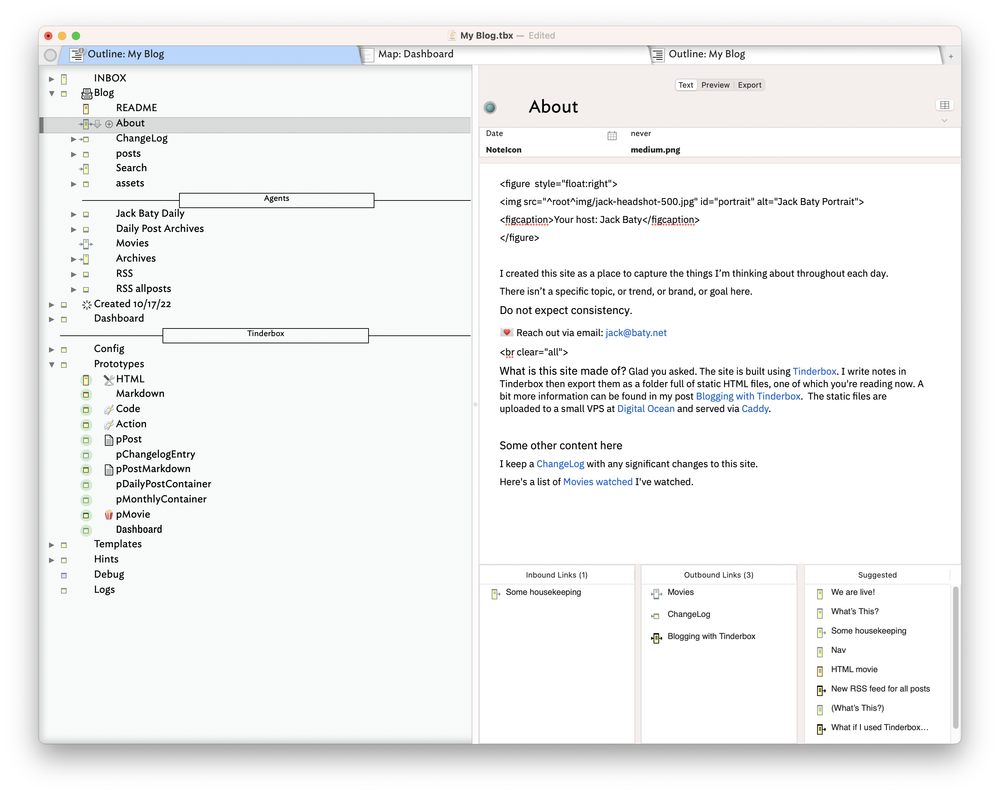

I created this site as a place to capture and share the things I’m thinking about throughout the day.
There isn’t a specific topic, or trend, or brand, or goal here.
Please do not expect consistency.
💌 Reach out via email: jack@baty.net
Percentage of writing generated by AI: 0%
What is this site made of? Glad you asked. The site is built using Tinderbox. I write notes in Tinderbox then export them as a folder full of static HTML files, one of which you're reading now. A bit more information can be found in my post Blogging with Tinderbox. The static files are uploaded to a small VPS at Digital Ocean and served via Caddy.
Writing a post in Tinderbox looks like this...
 

Some other stuff:
I keep a ChangeLog with any significant changes to this site.